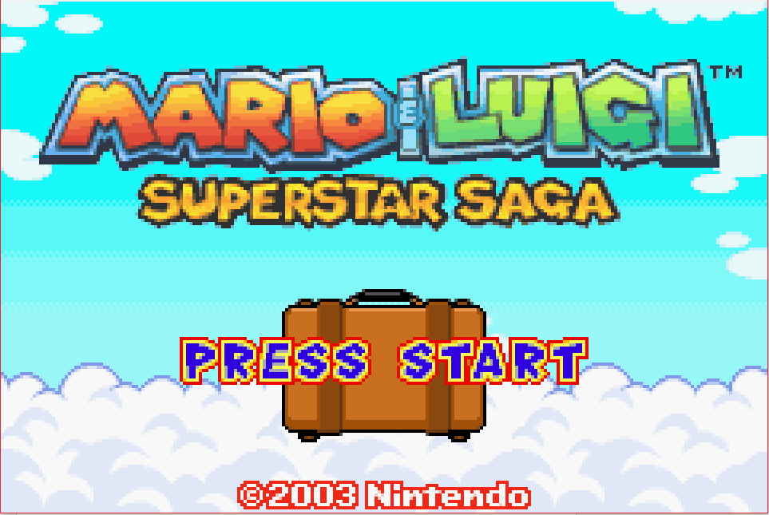
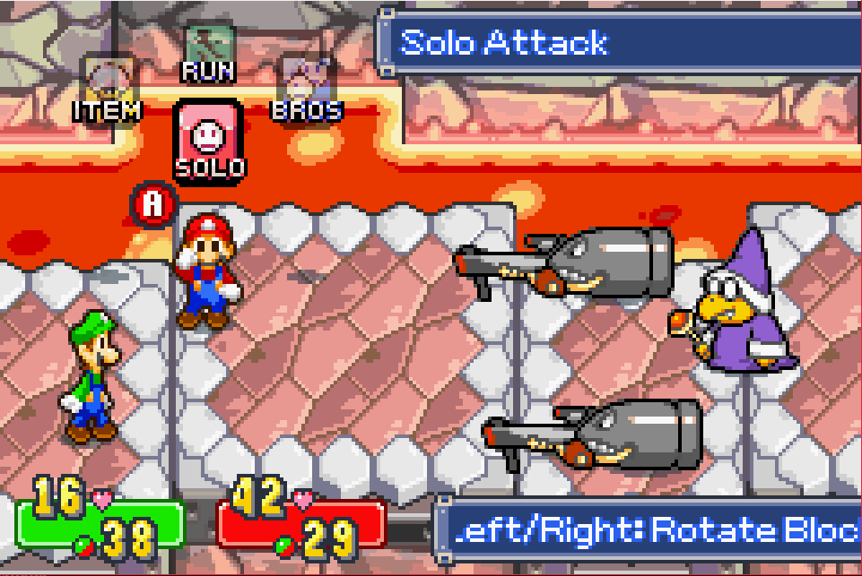
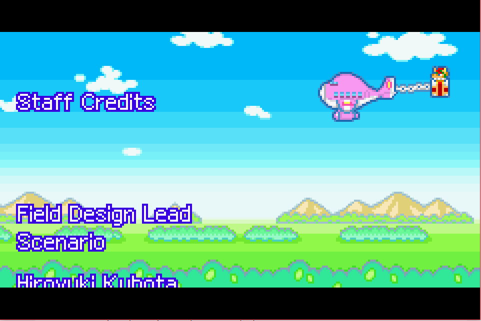

Mario & Luigi: Superstar Saga

Complete on 2017-09-22
5 / 5
Release Date: Nov 17, 2003
Meta Score: 90
Screenshots



Notes
The Mario & Luigi is the smaller brother of the much more well known Paper Mario series, both descended from the original Super Mario RPG on the SNES. M&L focuses on the exploits of both Mario brothers together, as they explore new lands and go on adventures.The story stays away from traditional Mario game tropes. The story opens as Princess Peach has lost her voice after betrayal by an ambassador from the Bean-bean kingdom and Mario and Bowser team up to go and get it back. There are some nice twists and turns in there too. The game has a great sense of humour, with running gags including the Bros' attempts to get their message across through gesturing and no one recognising this green guy who's with Mario.
This all plays out in RPG fashion, reminiscent of games like Earthbound. Battles are turn based, but you can press the button at the right time (do an "action command") to do extra damage or leap over enemy attacks. Different enemies have different weaknesses to your attacks: jumping, hammering, and elemental "hand powers". There are also bros attacks which require more elaborate input to do extra damage. A nice twist on this is that after using the same Bros attack repeatedly one of the brothers will have a brainwave mid-battle, unlocking an alternate form of the attack. Bosses generally rely on good dodging of their attacks and figuring out how to deal damage to them efficiently rather than sheer statistical mastery.
Exploring the overworld is a kind of platform/rpg hybrid. You walk Mario and Lugi around, jumping the brother in front with A and in the back with B, from a fixed perspective. This works surprisingly well and avoids a lot of issues with perspective that can plague this style. Later on you gain special moves to use as well, which makes swapping the brothers important. These are naturally funny in themselves, like Mario lighting Luigi's butt on fire to charge fast across the screen. They double up as battle moves which ties the two gameplay styles together nicely.
You explore a variety of areas, which usually have some bonuses you can't grab first time through. This opens up exploration and backtracking later when you get more special moves. Near the end of the game there's some freedom in the order you complete the story too which is nice. There are a few side quests, the biggest of which revolves around finding beans to brew stat-boosting coffee.
There are also minigames, which revolve around clever use of A and B to control Mario and Luigi, like controlling them on 2 seperate minecarts while hopping obstacles. Usually you play a relatively gentle variation as part of the story and can play harder version for bonuses.
Overall the game is fantastic. I can only offer a few nitpicks like a slight lack of enemy variety leading to repetitiveness near the end of an area and a slightly obnoxious final boss.